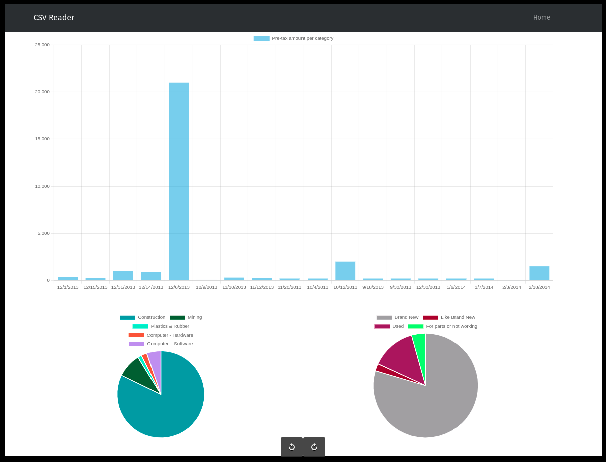
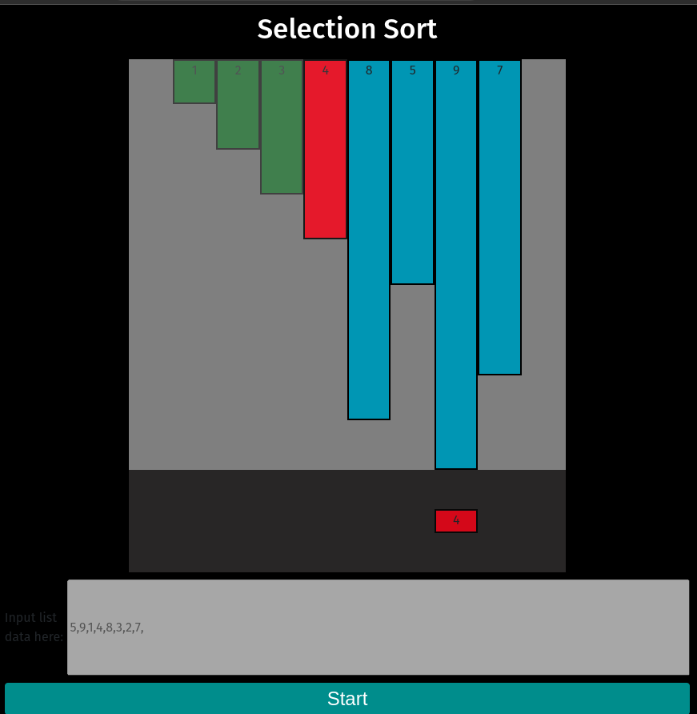
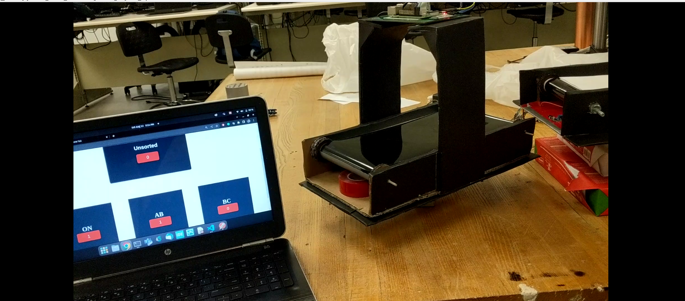
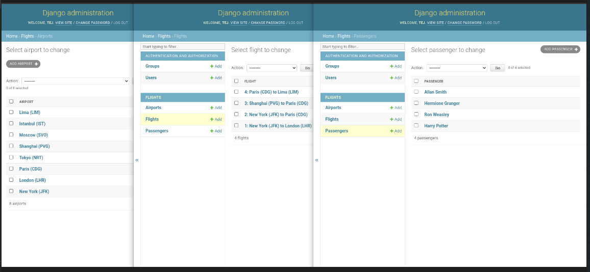
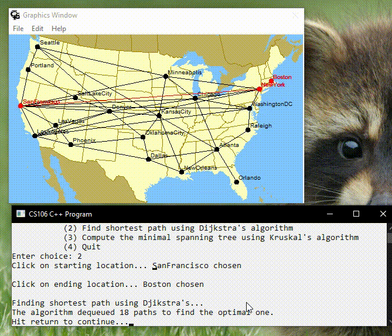

Valentino Showroom Rebranding (RoomLe & Canva)

This project demonstrates the rebranding of Valentino’s showroom, targeting the 16-21 age demographic with a focus on inclusivity, sustainability, and cost-efficiency. Using the RoomLe 2D/3D planner, I designed a modern, tech-savvy layout with vibrant colors and contrasting elements that resonate with Gen Z. My design incorporates key principles of balance, emphasis, rhythm, and unity, ensuring both functionality and aesthetic appeal. Additionally, I created a vision board to consolidate the visual identity, ensuring cohesive branding.

Developed comprehensive budgeting spreadsheets for various events, meticulously tracking income and expenses to ensure financial transparency and maximize resource allocation.
Developed comprehensive budgeting spreadsheets for various events, meticulously tracking income and expenses to ensure financial transparency and maximize resource allocation.

Developed mock critical paths for events like incentive conferences, corporate team-building event, and a student phone package launch for a telecommunications company. This approach organized projects by identifying key tasks and deadlines, with responsibilities assigned to team members, showcasing effective event planning and project management skills.

This elegant spring garden wedding tablescape features vibrant floral centerpieces with pink and orange flowers, complemented by neutral linens and chic dinnerware. Accents of greenery create a romantic atmosphere, making it perfect for unforgettable celebrations. This design showcases an inviting and sophisticated event setting.

This Django The Summer Fete classwork project was a vibrant, community-focused event designed for suburban families in Kitchener, Canada, targeting children aged 5-12 and their parents aged 25-45. The event featured a carefully crafted mission, vision, and brand identity, including custom colors, typography, and logo. A strategic marketing plan utilizing the PESO model integrated traditional media such as direct mail and radio ads with digital tactics like social media and email marketing. Comprehensive media engagement was achieved through a press release, an emergency communications plan, and an on-site media plan, alongside a post-event survey to gather attendee feedback. This project exemplifies a commitment to creating impactful and engaging community events.

As a part of a class project, HPH Event Management presented a sponsorship development pitch to McDonald's for a fundraising event focused on engaging families in the community. The presentation highlighted partnership opportunities designed to enhance brand visibility and foster community connections. Tailored sponsorship packages included logo placement, on-site engagement, and media exposure, demonstrating how McDonald's could strengthen its role as a community supporter. This experience showcased our commitment to creating impactful collaborations.

I volunteered at the Uptown Waterloo Jazz Festival, where I contributed to the event's success by setting up various booths, including sponsorship, first-aid, and the kids’ zone. At the main entrance, I greeted attendees, provided event information, and sold tickets for the basket draw, while also collecting donations to support the festival. This experience allowed me to enhance my organizational and communication skills while connecting with the community and enjoying a vibrant celebration of music and culture..

I designed a diverse range of marketing materials for various events, including the Summer Fete and Flavors of Canada, aimed at creating a strong brand identity that reflects each event's message to the target audience. This included invitations, logos, infographics, and billboards, all tailored to resonate with attendees and communicate the essence of the events. Using tools like Canva, I ensured that each piece effectively engaged the audience while maintaining a cohesive visual identity across all materials. These marketing materials served to promote and enhance the overall experience of each event..

"I hold certifications in Smart Serve, Food Handling, and Occupational Health and Safety (OHS). These qualifications equip me to serve alcohol responsibly, maintain high standards of food safety, and ensure workplace safety and compliance.(Tensorflow1.12 as backend)


{kind=link}
{kind=link}
{kind=link}
{kind=link}